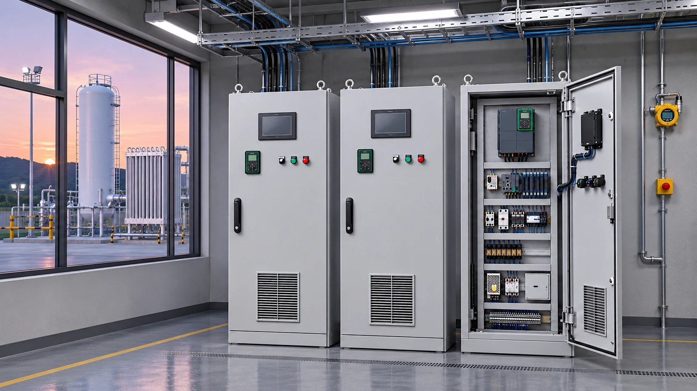
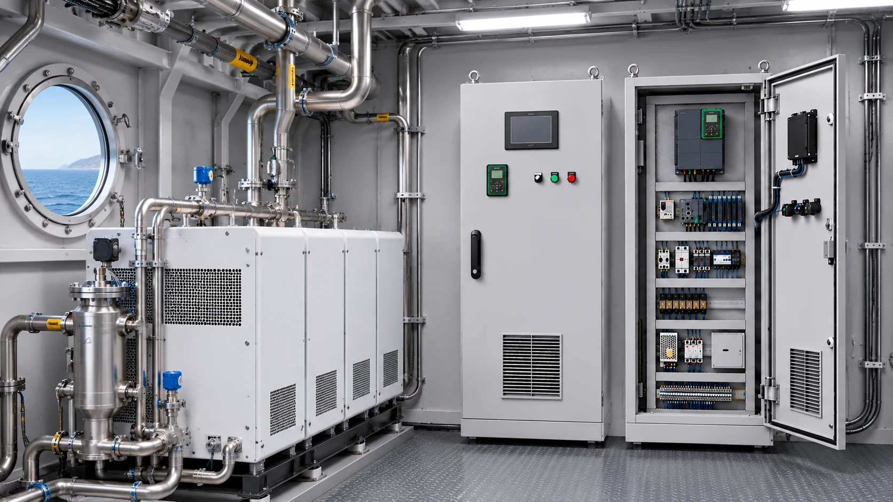
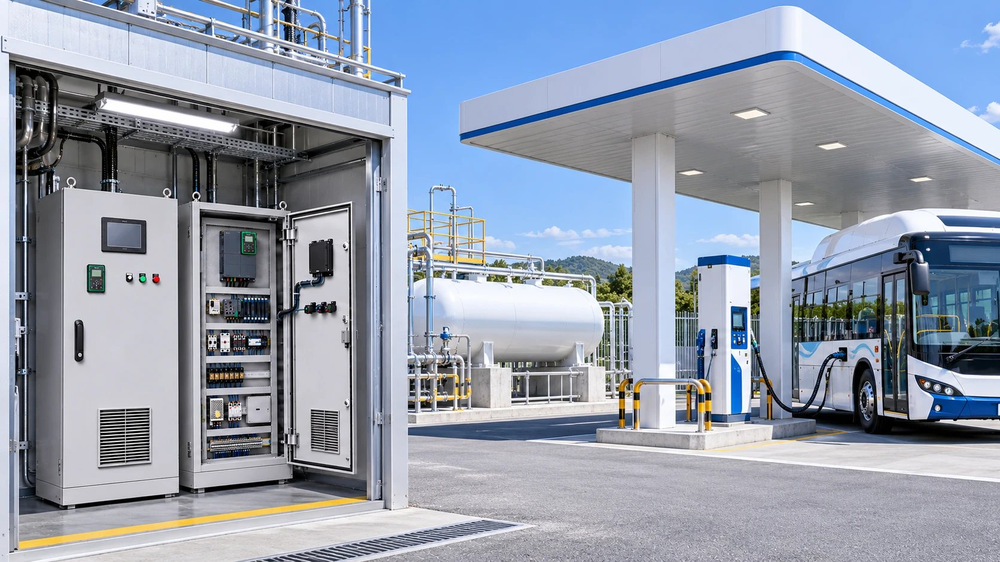

(주)동인엔시스는 산업통상자원부 수소전문기업입니다. 상용 액화수소충전소에 VFD·PLC·UPS 제어시스템을 공급해 운영 실증을 이어 가고 있으며, 액화수소충전소 제어시스템 특허 5건(등록 2건 · 출원 3건)과 수소추진선박 실증 과제 경험으로 수소 설비의 안전한 운전과 데이터 관리를 지원합니다.

등록·출원한 특허 5건은 전력제어 로직, 운전 안전성, 에너지 효율 최적화, 설비 보호 알고리즘과 운전 데이터를 설계에 되돌리는 데이터 순환형 사업 구조를 다룹니다.

대상 설비, 운전 조건, 고객 사양서·안전 요구 확인
운전 순서·인터록·알람, 입출력(I/O) 목록, 전력 구성
제어반 제작·배선, PLC·인버터 프로그램
출하 전 동작·인터록·알람·보호 시험
현장 설치, 시운전, 운영 지원과 데이터 관리

| 분야 | 발주처 · 현장 | 공급 범위 |
|---|---|---|
| 액화수소충전소 | SK E&S 액화수소충전소 | VFD · PLC · UPS 제어시스템 공급, 상용 충전소 운영 실증 |
| 수소추진선박 | 해양수산부 안전기반 소형 수소추진선박 기술개발 및 실증 (2022.4~2026.12) | 통합제어 · 감시 · 시스템 통합 |
| 에너지 플랜트 | SK 에코플랜트 · 한국남부발전 연료전지 발전소 CCUS 설비 | CCUS 설비 BOP 제어시스템 |
수소 외 선박·LNG·산업 플랜트 실적은 적용 분야 페이지에서 볼 수 있습니다.
상용 액화수소충전소에 VFD·PLC·UPS 제어시스템을 공급하고 운영 실증을 이어 가고 있습니다.
해양수산부 수소추진선박 실증 과제에서 통합제어·감시·시스템 통합을 맡아 검증한 기술을 특허로 정리했습니다.
선박 LNG 연료가스공급(FGSS)·BOG 압축기 제어시스템을 국내외 조선소에 공급하며 쌓은 가스 설비 제어 경험을 수소에 잇고 있습니다.
네. SK E&S 액화수소충전소에 VFD·PLC·UPS 제어시스템을 공급했고, 상용 충전소 운영 실증을 이어 가고 있습니다.
산업통상자원부 수소전문기업으로 등록되어 있고, 액화수소충전소 제어시스템 관련 특허 2건을 등록하고 3건을 출원했습니다. 특허는 전력제어 로직, 운전 안전성, 에너지 효율 최적화, 설비 보호 알고리즘 등을 다룹니다.
충전소 설비의 제어·감시를 맡습니다. 펌프·열매체유 순환 장비의 정밀 제어와 실시간 모니터링, 에너지 효율, 안전 관리 기능을 하나의 제어 시스템으로 묶습니다.
네. 해양수산부 「안전기반 소형 수소추진선박 기술개발 및 실증」 과제(2022.4~2026.12)에 참여해 연료전지·추진모터·수소탱크의 통합제어·감시·시스템 통합을 맡고 있습니다.
네. 제어반에서 설비를 제어하면서 운전·전력 데이터를 함께 수집하는 구조를 단계적으로 구축하고 있으며, 지능형 제어반으로 클라우드나 고객사 서버에 연결할 수 있습니다.
설비 구성, 안전 요구, 제어반 수와 사양에 따라 달라집니다. 사양서나 설비 목록을 주시면 검토 후 구성안과 함께 견적을 드립니다.
수소 설비와 필요한 제어 범위를 남겨 주시면 담당 엔지니어가 검토 후 연락드립니다. 사양서가 있으면 함께 알려 주십시오.